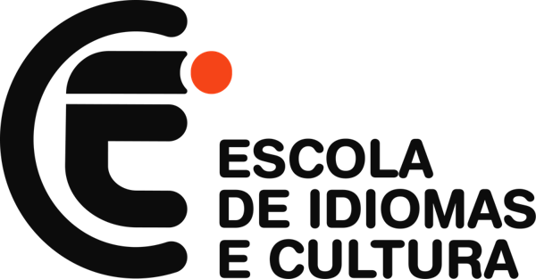
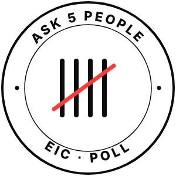
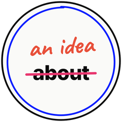
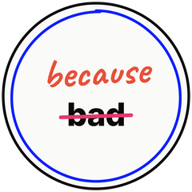
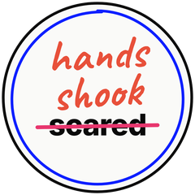
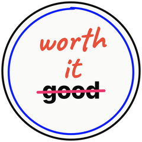
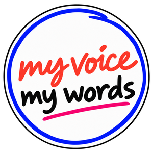
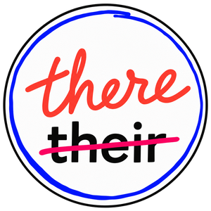

The goal of each project, on a single page.
O objetivo de cada projeto, em uma página só.
At a glance · De relance
Activate what students already think and can say before the unit.
Ativar o que o aluno já pensa e sabe dizer antes da unidade.
Give students more writing practice, with a topic and a sheet ready to go.
Dar mais prática de writing, com tema e folha prontos.
Support students in each Life writing task.
Apoiar o aluno em cada tarefa de writing do Life.
Correct and grade writing the same way, across all teachers.
Corrigir e dar nota de writing do mesmo jeito.
Train your correction eye on real texts.
Treinar o olhar de correção em textos reais.
01 · With students · Com os alunos
Goal · Objetivo
Activate what students already think and can say before the unit.
Ativar o que o aluno já pensa e já sabe dizer antes da unidade.

Six opinion questions per unit, Teens 1 to 5.
Seis perguntas de opinião por unidade, do Teens 1 ao 5.
Each student asks five classmates and writes down the answers.
O aluno pergunta a cinco colegas e anota as respostas.
The whole class votes on the screen and you discuss the answers.
A turma inteira vota na tela e vocês comentam as respostas.
02 · With students · Com os alunos
Goal · Objetivo
Give students more writing practice, with a topic and a sheet ready in a minute.
Dar ao aluno mais prática de writing, com tema e folha prontos em um minuto.




Level, unit and text type: opinion or both sides.
Nível, unidade e tipo de texto: opinião ou os dois lados.
Writing scenarios tied to the content of each unit.
Cenários de escrita ligados ao conteúdo de cada unidade.
Letter or A4, line spacing and line numbers for correction.
Letter ou A4, espaço entre linhas e numeração para a correção.
Topic sentence and opinion essay, with answer key.
Topic sentence e opinion essay, com gabarito.
Heads up · Atenção
Topics were proposed and checked by AI, with no teacher involved. If something sounds off, tell us.
Os temas foram propostos e conferidos por IA, sem professor. Se algo soar estranho, avisem.
03 · With students · Com os alunos
Goal · Objetivo
Support students in each Life writing task, without replacing the book.
Apoiar o aluno em cada tarefa de writing do Life, sem substituir o livro.

Every Life writing task, Teens 1 to 5, has its own sheet.
Cada tarefa de writing do Life, do Teens 1 ao 5, tem a sua.
Ready-made language blocks students can use in their text.
Blocos de linguagem prontos para o aluno usar no texto.
A revision checklist: students check their text and read it aloud before handing it in.
Checklist de revisão: o aluno confere e lê em voz alta antes de entregar.
The sheet summarizes the task. The official reference is still Life.
A folha resume o enunciado. A referência oficial continua sendo o Life.
04 · Between teachers · Entre professores
Goal · Objetivo
All teachers correct and grade writing the same way.
Todos os professores corrigem e dão nota de writing do mesmo jeito.

Four criteria, 0 to 5 each. The total divided by 2 gives a grade from 0 to 10.
Quatro critérios de 0 a 5. A soma dividida por 2 dá a nota de 0 a 10.
Mark 3 to 5 error categories, but count every error when you grade. A repeated error counts once.
Marque de 3 a 5 categorias de erro, mas conte todos os erros ao dar a nota. Erro repetido conta uma vez.
One pen only, students rewrite what was marked, and every text gets at least one praise mark.
Uma caneta só, o aluno reescreve o que foi marcado e todo texto recebe ao menos um elogio.
Two texts corrected step by step: Theo (7.5) and Lena (9.5).
Dois textos corrigidos passo a passo: Theo (7,5) e Lena (9,5).
| Criterion | Score | Errors |
|---|---|---|
| Task and content | The four parts of the text, developed As quatro partes do texto, desenvolvidas | |
| Organization | Logical order and linking words Ordem lógica e conectores | |
| Vocabulary | 5 · 3 · 1 | up to 2 · 3 to 5 · 6+ |
| Grammar | 5 · 3 · 1 | by error range por faixas de erros |
| Mark | Meaning |
|---|---|
| WW | Wrong word Palavra errada |
| SVA | Subject-verb agreement Concordância sujeito-verbo |
| NS | New sentence Nova frase |
05 · Between teachers · Entre professores
Goal · Objetivo
Train your correction eye on real texts before correcting your own class’s.
Treinar o olhar de correção em textos reais antes de corrigir os da turma.
Students’ texts with the correction-code marks already on them.
Textos de alunas com as marcas do código de correção.
You score the four criteria and compare with the reference grade.
Você pontua pelos quatro critérios e compara com a nota de referência.
Every decision is explained, so we align our criteria.
Cada decisão vem explicada, para alinhar o critério entre nós.